Part 1 · Fun with Filters
1.1 Convolutions from Scratch
I wrote 2D convolution using only NumPy. I flip the filter, pad the image with zeros, and then for each pixel I multiply the filter with the patch of image under it and add everything up.
Four-loop implementation
The outer two loops go over the pixels of the image and the inner two go over the filter.
def conv_four(img, filter):
flipped = np.flip(filter)
fh,fw = flipped.shape
y_add,x_add = fh//2,fw//2
padded = np.pad(img, ((y_add, y_add), (x_add, x_add)), mode="constant")
ih,iw = img.shape
result = np.zeros((ih,iw))
for y in range(ih):
for x in range(iw):
for i in range(fh):
for j in range(fw):
result[y,x] += padded[y+i,x+j]*flipped[i,j]
return resultTwo-loop implementation
Here I got rid of the inner two loops. I take the patch under the filter as a slice, multiply it by the filter and call np.sum.
def conv(img, filter):
flipped = np.flip(filter)
fh,fw = flipped.shape
y_add,x_add = fh//2,fw//2
padded = np.pad(img, ((y_add, y_add), (x_add, x_add)), mode="constant")
ih,iw = img.shape
result = np.zeros((ih,iw))
for y in range(ih):
for x in range(iw):
w = padded[y:y+fh, x:x+fw]
result[y,x] = np.sum(w*flipped)
return resultComparison with scipy.signal.convolve2d
I checked both versions against convolve2d(img, filter, mode="same") on the cameraman image and they match. With the 9×9 box filter the biggest difference is around 10−15, which is just floating point error, and with Dx and Dy the difference is exactly 0.
Here is how long each one took with the 9×9 box filter on the cameraman image (542×540):
- Four loops: 3.85 s
- Two loops: 0.31 s
scipy.signal.convolve2d: 0.016 s
For the boundary I pad with zeros, half the filter size on each side, so the output is the same size as the input. This is the same as scipy with mode="same" and the default boundary="fill". The downside of zero padding is that the box filtered image gets darker near the border, and the derivative images get a fake edge around the border. Scipy has more options than mine. mode="full" gives back the bigger output, and boundary="symm" mirrors the image at the border so the fake edge goes away.
Results
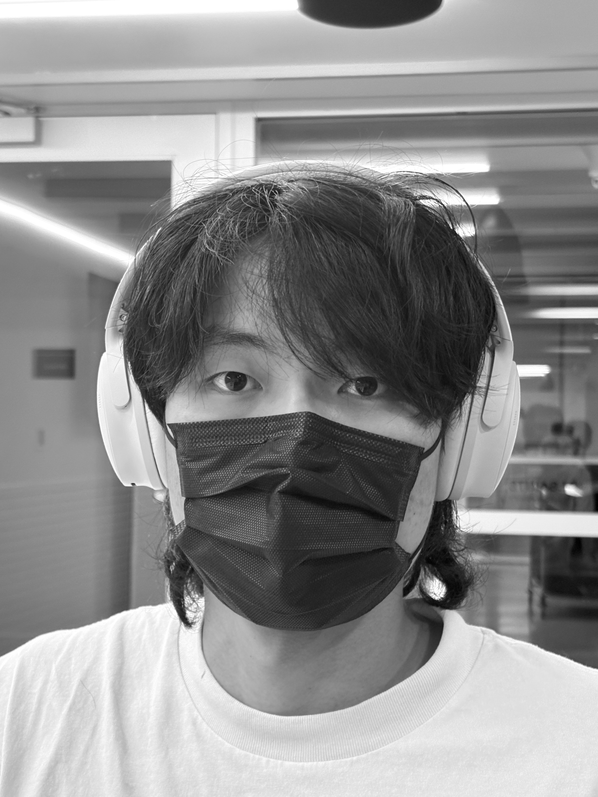
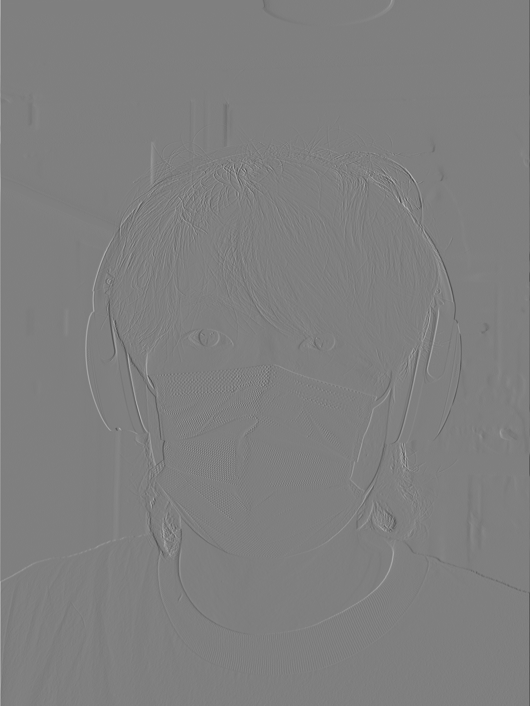
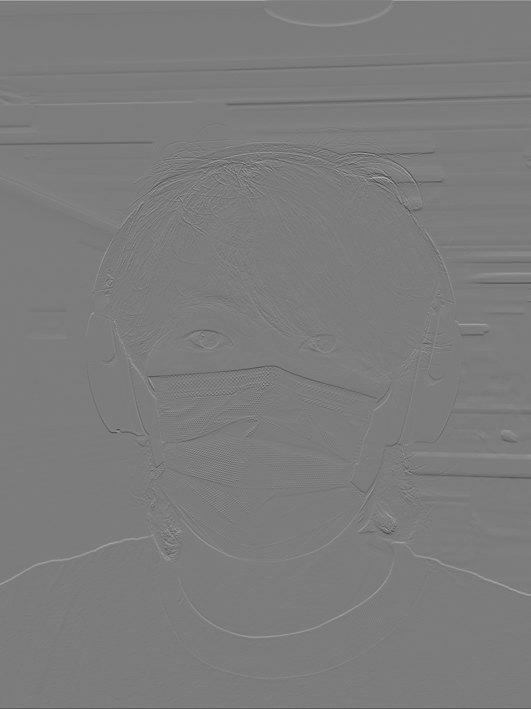
1.2 Finite Difference Operator
I convolved the cameraman image with Dx = [1, 0, −1] and Dy = [1, 0, −1]T to get the partial derivatives in x and y. The gradient magnitude is √(dx² + dy²), and I threshold it to get the edge image.
D_x = np.array([[1,0, -1]])
D_y = np.array([[1], [0],[-1]])
cam = gray_img / 255.0
dx = convolve2d(cam, D_x, mode="same", boundary="symm")
dy = convolve2d(cam, D_y, mode="same", boundary="symm")
mag = np.sqrt(dx**2 + dy**2)
edges = mag > T_1
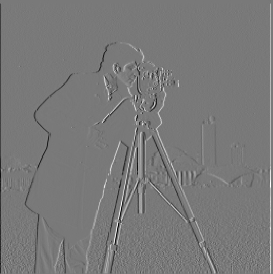
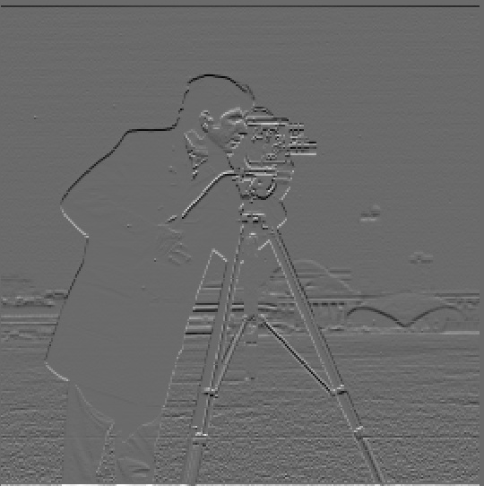
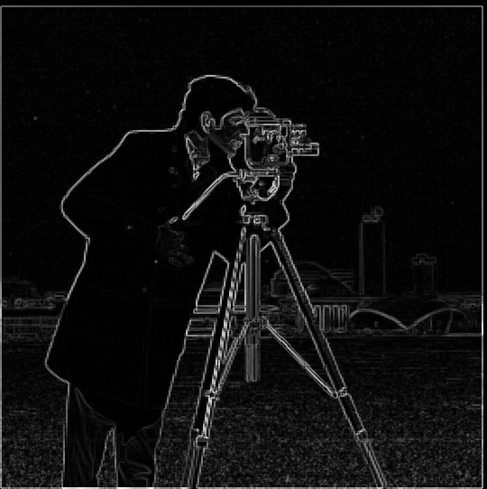
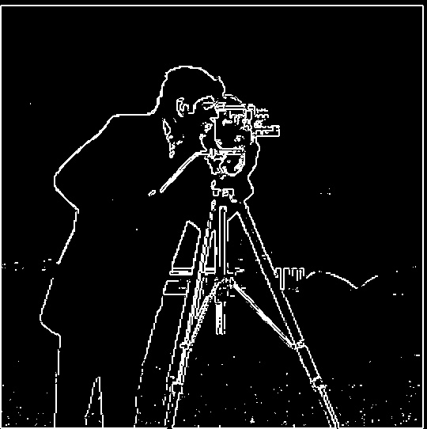
My pixel values are between 0 and 1. I tried 0.10, 0.15, 0.25 and 0.35 as the threshold. With 0.10 and 0.15 the grass is covered in white dots (about 16% and 10% of all the pixels count as edges). With 0.35 the dots are gone, but the tripod legs and the outline of the man start to break apart and the buildings in the back are almost gone. I went with 0.25. The man, the camera and the tripod are still connected and there is only a bit of noise left in the grass. I do lose most of the buildings in the background with this threshold.
1.3 Derivative of Gaussian (DoG) Filter
The result from 1.2 is pretty noisy, so here I blur the image with a Gaussian first and then take the derivatives. The Gaussian is 9×9 with σ = 1.5. I get the 1D kernel from cv2.getGaussianKernel and take the outer product with itself to make it 2D.
Blur, then differentiate
def gaussian_diff(img, threshold):
img = img.astype(np.float64) / 255.0
g_1 = cv2.getGaussianKernel(9, 1.5)
g_2 = np.outer(g_1, g_1)
smoothed = convolve2d(img, g_2, mode="same", boundary="symm")
dx = convolve2d(smoothed, D_x, mode="same", boundary="symm")
dy = convolve2d(smoothed, D_y, mode="same", boundary="symm")
mag = np.sqrt(dx**2 + dy**2)
return (mag > threshold).astype(np.uint8) * 255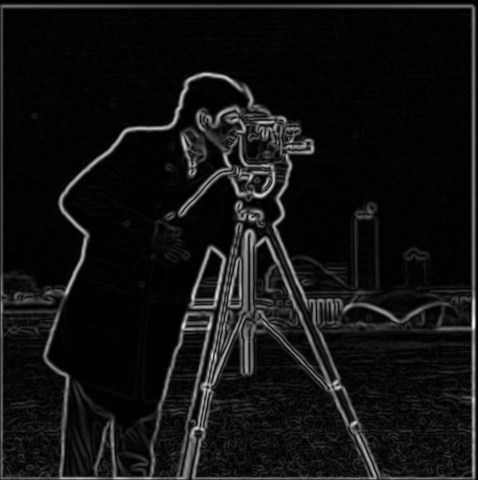

Single convolution with DoG filters
Instead of blurring and then taking the derivative, I can convolve the Gaussian with Dx and Dy first. That gives two derivative of Gaussian filters, and then I only need to convolve the image once for each direction.
def dog_diff(img, threshold):
img = img.astype(np.float64) / 255.0
g_1 = cv2.getGaussianKernel(9, 1.5)
g_2 = np.outer(g_1, g_1)
DoG_x = convolve2d(g_2, D_x)
DoG_y = convolve2d(g_2, D_y)
dx = convolve2d(img, DoG_x, mode="same", boundary="symm")
dy = convolve2d(img, DoG_y, mode="same", boundary="symm")
mag = np.sqrt(dx**2 + dy**2)
edges = (mag > threshold).astype(np.uint8) * 255
return DoG_x, DoG_y, mag, edges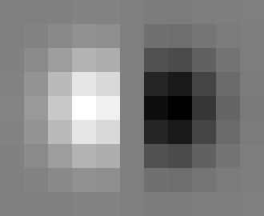
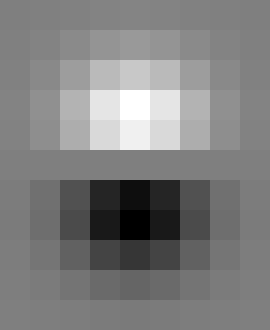

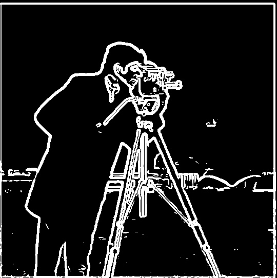
What differences do you observe?
The biggest difference is the noise. Almost all of the dots in the grass are gone, so I could use a much lower threshold (0.08 instead of 0.25), and now the buildings in the background show up too. The edges are also thicker and smoother, and they look like actual lines instead of broken dots. I did lose some small details, like the inside of the camera and the face. The DoG filters give the same result as blurring first and then taking the derivative. I compared the two edge images and not a single pixel is different.
Part 2 · Fun with Frequencies
2.1 Image Sharpening
A Gaussian blur keeps only the low frequencies of an image. So if I subtract the blurred image from the original, what is left is the high frequencies. To sharpen, I add those high frequencies back to the image multiplied by some amount α, which is sharp = img + α(img − blur). This can be done as one convolution with the filter (1 + α)·e − α·g, where e is the unit impulse and g is the Gaussian.
def unsharp(img, alpha):
img = img.astype(np.float64) / 255.0
g_1 = cv2.getGaussianKernel(9, 1.5)
g_2 = np.outer(g_1, g_1)
e = np.zeros((9, 9))
e[4, 4] = 1
usm = (1 + alpha) * e - alpha * g_2
res = convolve2d(img, usm, mode="same", boundary="symm")
return np.clip(res, 0, 1)
def blur(img):
img = img.astype(np.float64) / 255.0
g_1 = cv2.getGaussianKernel(9, 1.5)
g_2 = np.outer(g_1, g_1)
return convolve2d(img, g_2, mode="same", boundary="symm")Taj Mahal
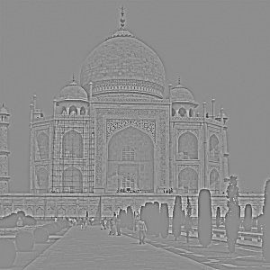
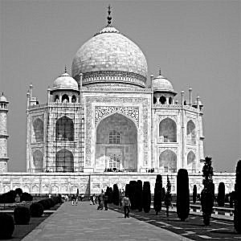
Another image: Cáceres old town
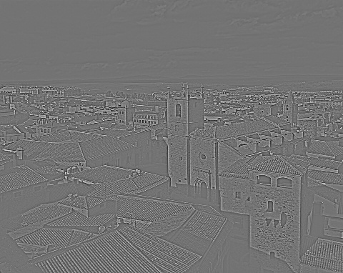

Varying the sharpening amount
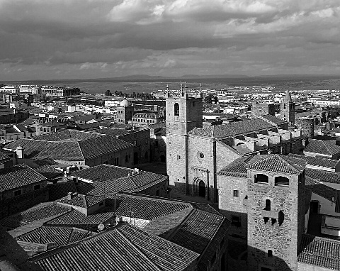
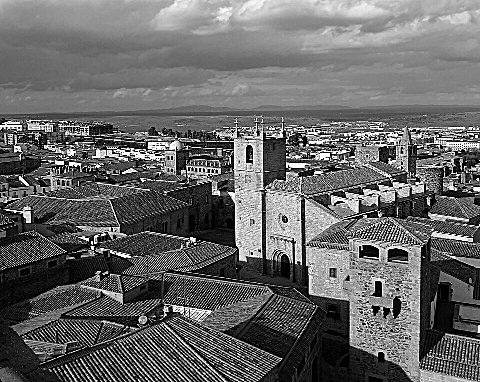
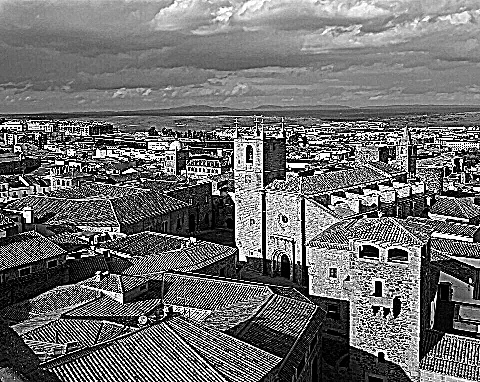
With α = 0.5 I can barely tell the difference. With α = 1.5 the roof tiles and the windows look noticeably sharper. At α = 3 there start to be bright and dark halos around the strong edges. At α = 6 it looks bad. The halos are really obvious, the contrast is way too high, and the noise in the sky and clouds gets boosted as well.
Blur a sharp image, then sharpen it again
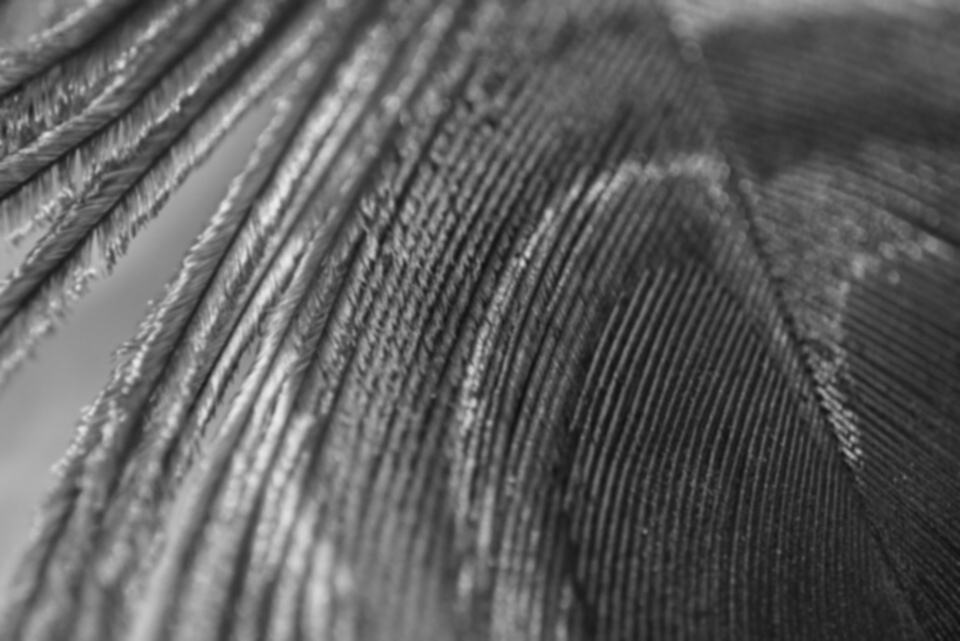
After sharpening, the bigger strands of the feather have their contrast back, so at first it looks sharp again. But the really thin strands are still missing. The blur removed those frequencies, and sharpening can only boost what is still in the image, it can not bring back something that is gone. So what I get is closer to a high contrast version of the blurred image than to the original.
2.2 Hybrid Images
A hybrid image (Oliva, Torralba and Schyns, SIGGRAPH 2006) is the high frequencies of one image added to the low frequencies of another. When you look at it up close you mostly see the high frequency image, and from far away you can only see the low frequency one. For the low-pass I use a 2D Gaussian, and for the high-pass I subtract the Gaussian blurred image from the original. Before filtering I align the two images by clicking two matching points on each one (I used the eyes).
def hybrid_image(im1, im2, sigma1, sigma2):
k1 = int(6 * sigma1) | 1
k2 = int(6 * sigma2) | 1
g_1 = cv2.getGaussianKernel(k1, sigma1)
g_2 = cv2.getGaussianKernel(k2, sigma2)
high = im1 - convolve2d(im1, np.outer(g_1, g_1), mode="same", boundary="symm")
low = convolve2d(im2, np.outer(g_2, g_2), mode="same", boundary="symm")
return np.clip(high + low, 0, 1)Derek + Nutmeg
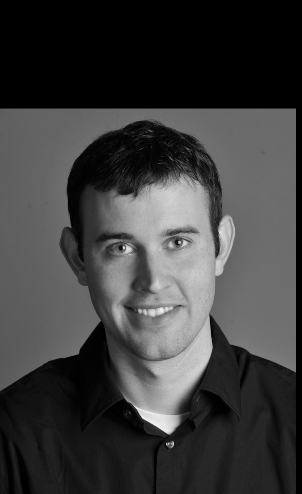
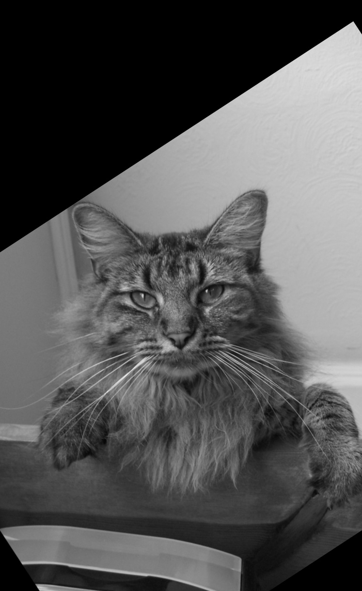
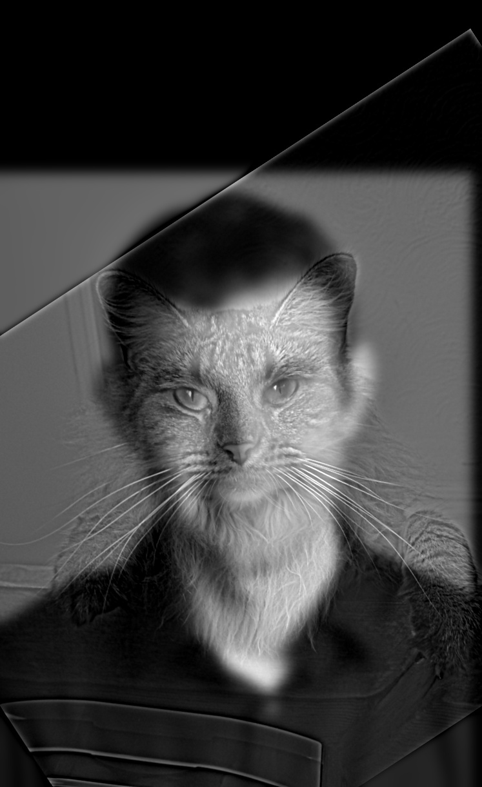
Favorite result: full process
My favorite one is Lincoln and Washington. Lincoln is the high frequency image (σ1 = 4) and Washington is the low frequency image (σ2 = 7).
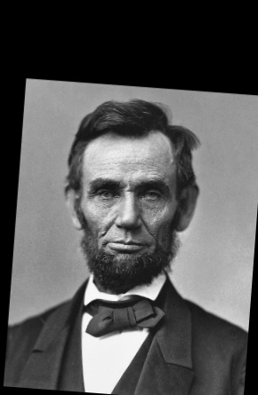
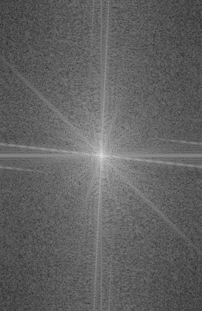
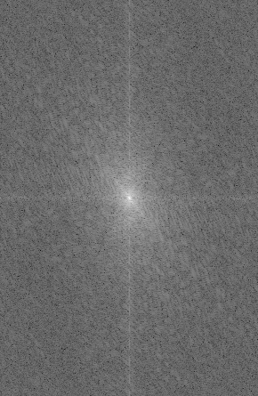
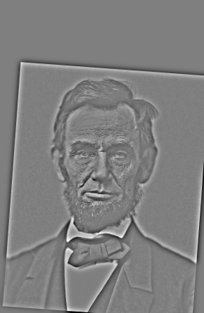
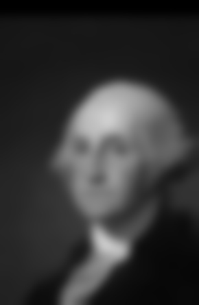
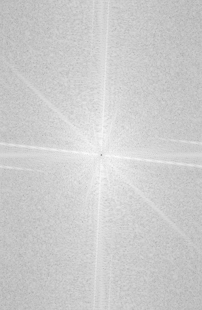
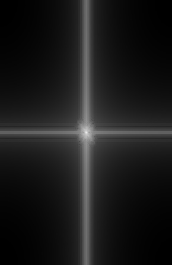
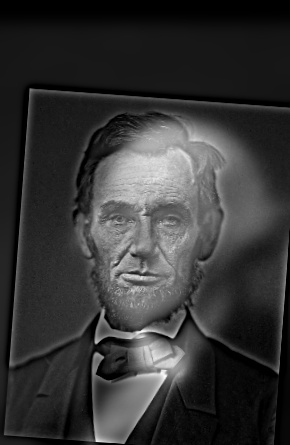
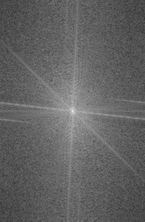
I computed the Fourier images with np.log(np.abs(np.fft.fftshift(np.fft.fft2(gray_image)))).
I picked the cutoffs by trying a few values and looking at the hybrid from up close and from across the room. With σ1 = 4, the high-pass keeps the wrinkles, the beard and the outline of Lincoln, and he is very clear up close. With σ2 = 7, the low-pass only keeps the general shape of Washington's face and his white hair. I made σ2 bigger than σ1 so that the two images do not share many frequencies. From far away the bright shape of Washington's head takes over, but it is not perfect. Lincoln's beard and hair are so dark that I can still see part of him even when the image is small. A smaller σ1 hides him better from far away, but then he also gets harder to see up close.
In the Fourier images, the low-passed Washington is black almost everywhere, with a bright spot in the middle and a cross along the two axes (I think the cross comes from the borders of the image). The high-passed Lincoln is the opposite. It is bright everywhere and only has a tiny dark dot right in the middle, where the lowest frequencies were removed. The hybrid looks like Lincoln's transform with the bright spot from Washington in the middle.
Girl with a Pearl Earring + Mona Lisa
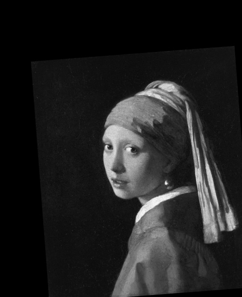
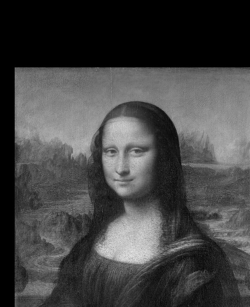
2.3 Gaussian and Laplacian Stacks
For the Gaussian stack I blur the image again at every level, but I never downsample, so all the levels are the same size as the original. Each level of the Laplacian stack is one Gaussian level minus the next one. The last Laplacian level is just the last Gaussian level, so if I add up all the levels I get the original image back.
I used 6 levels. σ starts at 2 and doubles every level. For the blur I convolve with the 1D Gaussian in one direction and then the other. It gives the same result as the 2D kernel but it is a lot faster when σ is big.
def blur(img, sigma):
k = int(6 * sigma) | 1
g_1 = cv2.getGaussianKernel(k, sigma)
if img.ndim == 3:
return np.dstack([blur(img[:, :, c], sigma) for c in range(img.shape[2])])
# g_1 then g_1.T is the same as the 2D outer(g_1, g_1), but much faster for big sigma
return convolve2d(convolve2d(img, g_1, mode="same", boundary="symm"), g_1.T, mode="same", boundary="symm")
def gaussian_stack(img, levels, sigma):
stack = [img]
for i in range(1, levels):
stack.append(blur(stack[-1], sigma * 2**(i - 1)))
return np.array(stack)
def laplacian_stack(img, levels, sigma):
g = gaussian_stack(img, levels, sigma)
l = g[:-1] - g[1:]
return np.concatenate([l, g[-1:]])Recreating Figure 3.42 with the Oraple
The rows are Laplacian level 0 (high frequencies), level 2 (medium), level 4 (low), and then all the levels added up. The columns are the apple with the mask, the orange with the mask, and the two blended together.
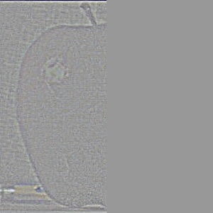
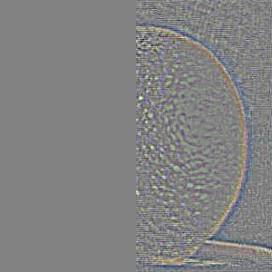
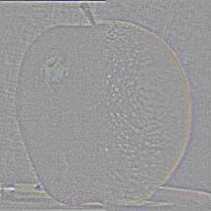
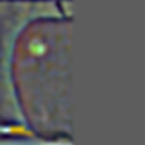
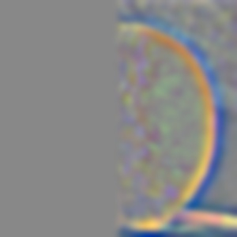
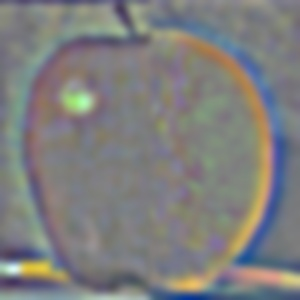
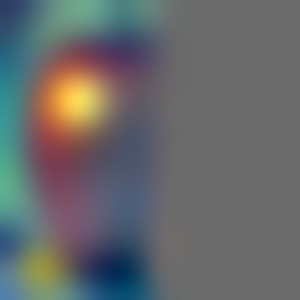
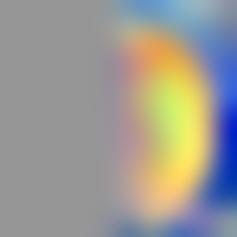
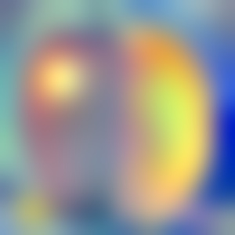
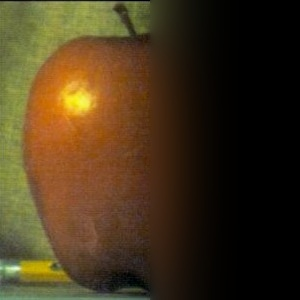
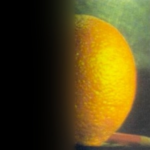
2.4 Multiresolution Blending
This follows Burt and Adelson (1983). I make a Laplacian stack for each image and a Gaussian stack for the mask. At each level I combine the two images using the blurred mask, L = G·LA + (1 − G)·LB, and at the end I add up all the levels. The mask is blurrier at the low frequency levels, so the low frequencies get mixed over a wide area while the high frequencies are mixed over a narrow one. That is why you can not see the seam.
def blend(im1, im2, mask, levels, sigma):
l_1 = laplacian_stack(im1, levels, sigma)
l_2 = laplacian_stack(im2, levels, sigma)
g_m = gaussian_stack(mask, levels, sigma)
left = g_m * l_1
right = (1 - g_m) * l_2
res = np.clip(np.sum(left + right, axis=0), 0, 1)
return left, right, resOraple: vertical seam

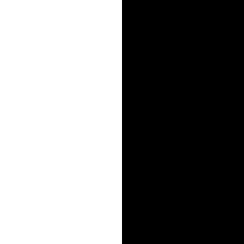
Irregular mask 1: Earth inside the Moon
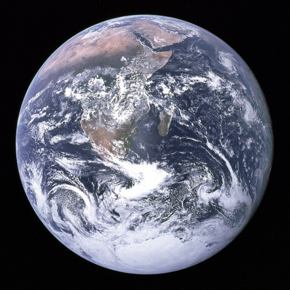
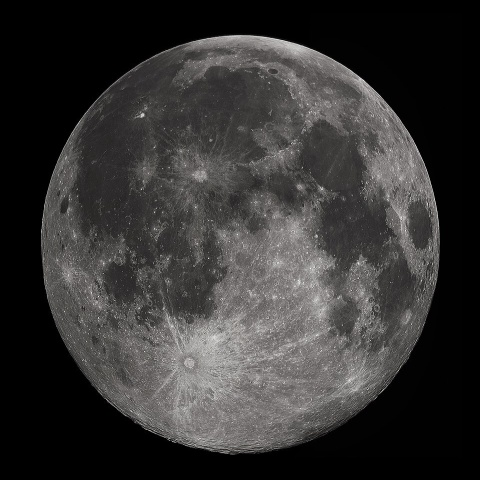
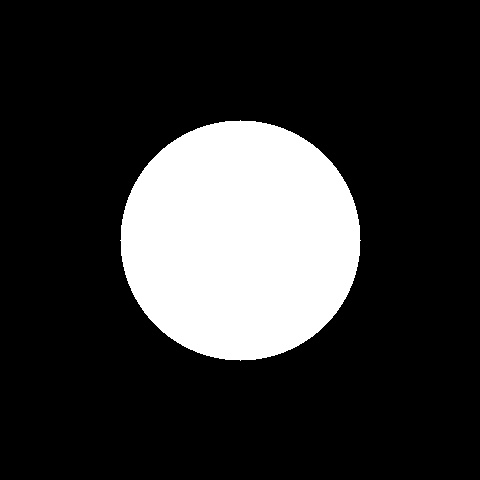
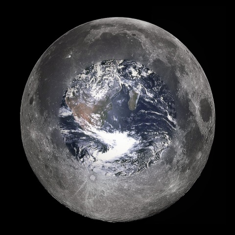
Irregular mask 2: eye in the palm
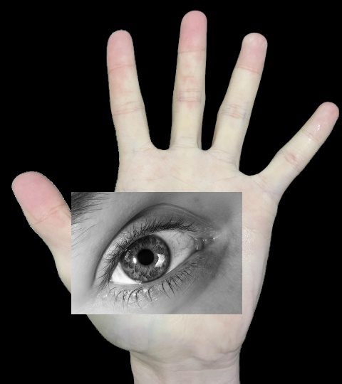
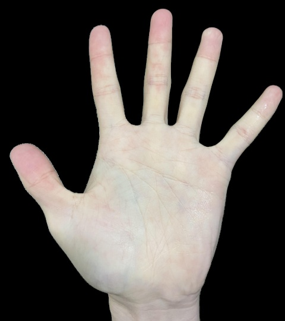
I made both masks in code. For the Earth and Moon the mask is a filled circle. For the eye I first pasted the eye onto a copy of the palm image, and then the mask is a filled ellipse around the eye.
Favorite result: Laplacian stack process
This is laid out like Figure 10 in the paper. For three levels it shows what each image contributes after the mask and the blend of the two, and the last row is the sum.
Reflection
Before this project I thought of sharpening, hybrid images and blending as three separate tricks. What I took away is that they are really one trick. In each of them I blur the image with a Gaussian to get the low frequencies, subtract to get the high frequencies, and then treat the two parts differently. The part that surprised me the most was the edge detection. I did not expect blurring an image to give better edges, but it makes sense now, because the noise is mostly in the high frequencies and taking a derivative makes those stronger.